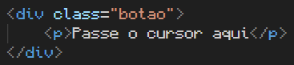
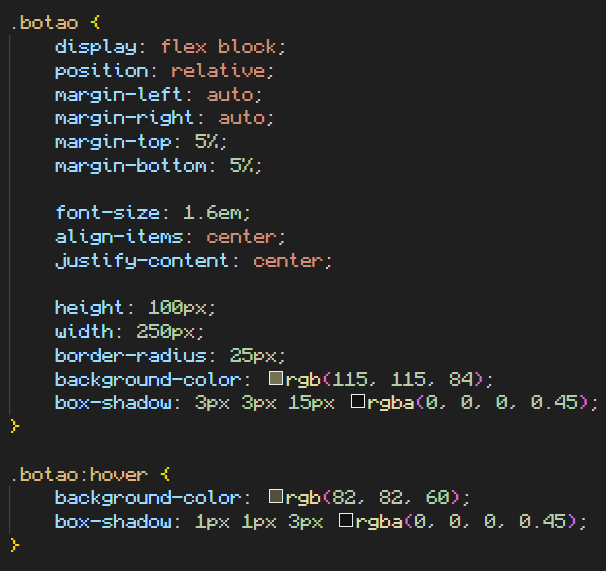

Mais seletores
Pseudo-class
As pseudo classes são estilos que só vão aparecer condicionalmente, de acordo com o estado do conteúdo (tag).
Sabemos que as classes são representadas no CSS com .
As pseudo-classes serão representadas com :
O estado do conteúdo é digitado logo após a declaração :
Estados
Hover: o estado hover só irá ativar o estilo quando o cursor estiver no mesmo espaço que o elemento.
Passe o cursor aqui
Código HTML do exemplo:
Código CSS do exemplo:
